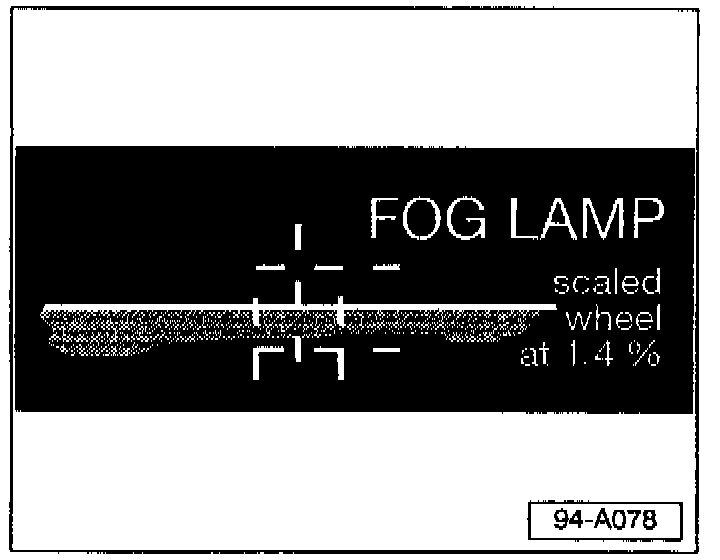

Fog Lamp, Alignment
- Switch fog lamps ON.- Align Beamsetter box with fog lamp (make sure it is between 30 and 70 cm from the fog lamp lens).

- Set Beamsetter scaled wheel to 1.4%.
Adjust fog lamp so the top of the beam pattern aligns with the centerline of the target grid on the beam pattern screen.